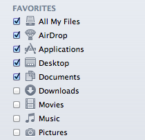
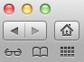
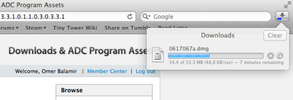

Yeni MacOS sürümü Lion’ın piyasaya çıkmasına günler kala göze çarpan deÄŸiÅŸiklikler hakkında aldığım notlar…
- Login ekranı yenilenmiş, aslında boot ekranındaki Apple logosunun devamı şeklinde yapılabilse estetik açıdan çok daha şık gözükebilirdi…

- Finder’da sidebar ikonları deÄŸiÅŸtirilmiÅŸ. Pencereler daha akıcı animasyonlar ile açılıyor.
-LaunchPad, bilgisayarınıza yüklü uygulamaların tümünü iPad (iOS) benzeri bir şekilde ekranda gösterilmesini sağlıyor.
-Reverse Scrolling, TrackPad’de yukarı-aÅŸağı scroll’un yönü deÄŸiÅŸtirilmiÅŸ, iOS’da olduÄŸu gibi yapılmış. Ben alışamadaım, doÄŸrudan eski seçeneÄŸe döndüm.
-Safari’de yenilikler…

- Reading List ile daha sonra okumak istediÄŸiniz linkleri kopyalama imkanı gelmiÅŸ, Instapaper ile ReadLater’a rakip olacak gibi, kullanışlı bir özellik.

- Download Manager ile artık toolbar’da indirilen dosyalarınızı ve ne kadarının indirildiÄŸini grafiksel olarak görebileceÄŸinizi saÄŸlayan bir özellik.